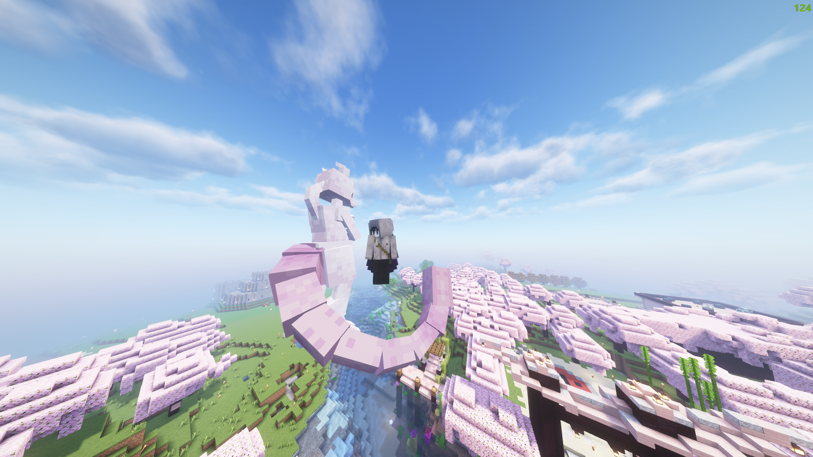
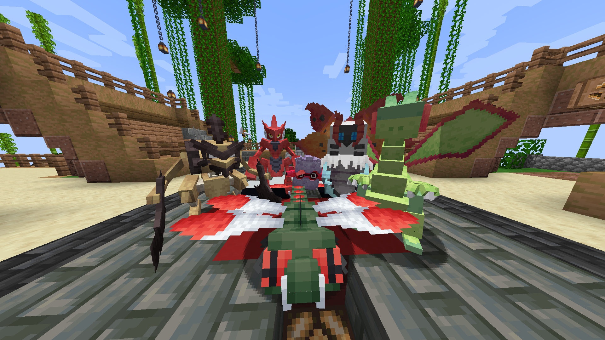
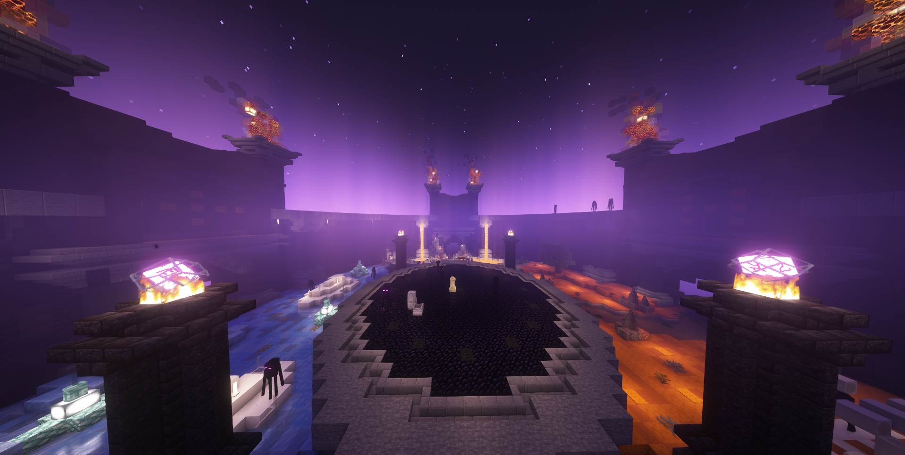

Cobblemon



Cobblemon is an open-source Pokémon mod that is available through Fabric and NeoForge for Minecraft version 1.21.1. Capture Pokémon to expand your team, battle wild Pokémon to gain experience, and level up to unlock new moves!